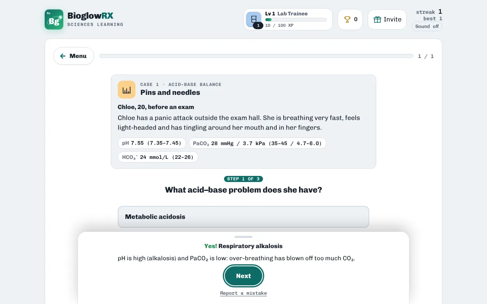

Anatomy & Physiology · free · no login
ABG practice: blood gas cases

Reading an arterial blood gas comes down to three questions in order: is the pH acidic or alkaline, is the cause respiratory (CO₂) or metabolic (bicarbonate), and is the body compensating?

Blood gas detective, part of Kidney Quest, walks you through short patient cases one step at a time. Each answer builds up the case file, and the case closes with a one-line takeaway.
A taste of what's inside
| Key idea | What to know |
|---|---|
| Normal blood pH | Kept between 7.35 and 7.45 |
| Bicarbonate buffer system | CO₂ and HCO₃⁻ mop up acid and base |
Ways to practise
- Study notes · Read the key ideas first: everything the games ask is in here.
- Explore the kidney · Anatomy, nephron, urine, hormones, fluids and pH, one card each.
- What does this? · Read the job, pick the part or process.
- Hormone check · ADH, aldosterone, ANP, renin and EPO: what does each do?
- Which group? · Anatomy, nephron, process, hormone, fluids or pH?
- Follow the flow · Filtrate through the nephron, urine out of the body, RAAS and ADH.
- Match Pairs · Pair each part with its job.
- Case Files · Blood gases, dehydration, stones and infections.
- Blood gas detective · Read pH, PaCO₂ and HCO₃⁻: name the acid–base problem.
How to study with it
- Read the Study notes section on acid–base balance.
- Open Blood gas detective and work through the cases step by step.
- Then try the general Case Files for kidney and fluid problems.
Questions
What is the normal blood pH range?
7.35 to 7.45. Below 7.35 is acidosis; above 7.45 is alkalosis.
Is it free?
Yes. Everything is free, with no ads and nothing to buy.
Do I need an account?
No. There is no login. Your scores, streaks and certificates are saved on your device.
Does it work on a phone?
Yes. It works in any modern browser on phones, tablets, Chromebooks and computers.
More free practice
 PharmacologyFree dosage calculation practiceTablets, liquids, mg/kg and IV rates with worked answersPlay free
PharmacologyFree dosage calculation practiceTablets, liquids, mg/kg and IV rates with worked answersPlay free  Anatomy & PhysiologyCranial nerves quizAll 12 nerves: number, name and jobPlay free
Anatomy & PhysiologyCranial nerves quizAll 12 nerves: number, name and jobPlay free  PharmacologyNursing pharmacology: drug classes quiz25 common medicines: class, system and usePlay free
PharmacologyNursing pharmacology: drug classes quiz25 common medicines: class, system and usePlay free BioglowRX Sciences Learning turns university science textbooks into free games, chapter by chapter: chemistry, anatomy & physiology, pharmacology, nutrition, and health & wellness. See all subjects.